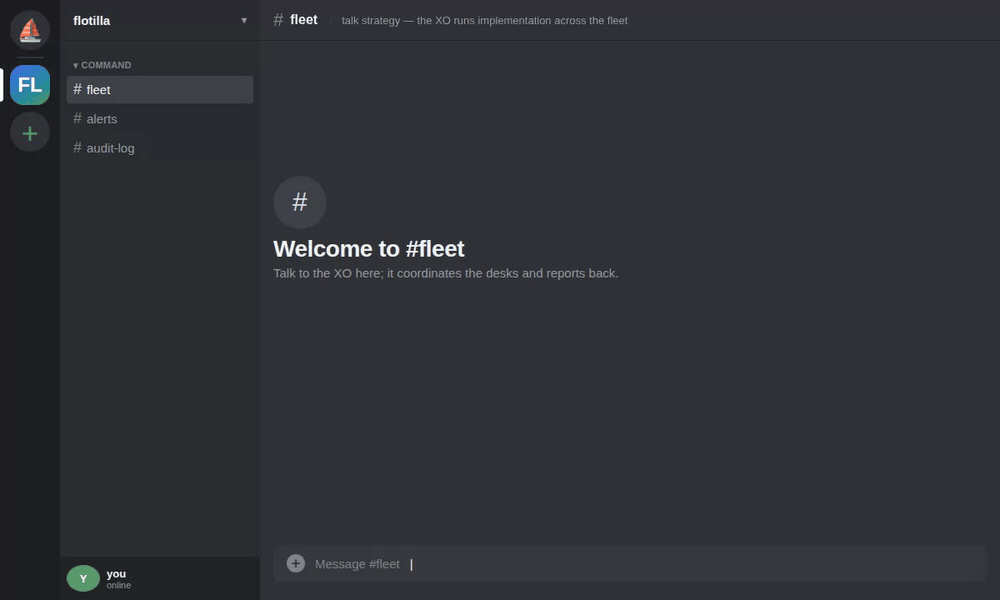

01
Mixed harnesses, one roster
Claude Code, Aider, OpenCode, and Grok desks behind one interface. Each stays an ordinary session you control; flotilla coordinates work across them without replacing the tools you already trust.
Stop shuffling 10 terminal windows. flotilla turns separate Claude Code / Aider / OpenCode / Grok sessions into one centrally coordinated fleet. A single hub agent coordinates multiple streams of work and lets you drive strategy, not implementation.
go install github.com/jim80net/flotilla/cmd/flotilla@latest

Claude Code, Aider, OpenCode, and Grok desks behind one interface. Each stays an ordinary session you control; flotilla coordinates work across them without replacing the tools you already trust.
Message the XO like a colleague — "what shipped overnight?", "benchmark the cache and report back." It routes to the right desk, collects replies, and answers in the same channel, from your phone.
Instructions and replies mirror to a dedicated channel under each agent's identity. Confirmed delivery means the transcript never lies about what landed — governance you can read back from anywhere.
Evaluators often bucket flotilla with agent orchestration platforms — CrewAI, LangGraph, AutoGen. They solve a different job at a different altitude.
Agent frameworks help you build multi-agent software. flotilla helps you run a fleet of coding agents you already trust — from a chat channel, with confirmed delivery and a durable record of who told whom what. Different job, different layer.
CrewAI · LangGraph · AutoGen
In-process SDKs for composing autonomous multi-agent applications. You wire roles, tools, and handoffs in code; the operator is usually the developer shipping the app.
herdr · tmux · Zellij
Agent-aware terminals that make panes visible and persistent. They watch the herd; they do not broker delegation or mirror an audit trail to your phone.
chief of staff · hub-and-spoke · chat-first
Drop-in coordination over harnesses you already run. One XO routes work to desks in live sessions, confirms delivery, and mirrors every instruction and reply to a channel you read from anywhere.
Full analysis: agent platforms vs flotilla · herdr vs flotilla
Each agent lives in a tmux pane. flotilla delivers an
instruction by typing it into the target pane — the same thing you do
by hand. For a turn-based agent, the injection is the wake; there's
nothing to poll.
The XO is the single router — span-of-control over backend, frontend, data, and infra desks. You get one coherent picture and one accountable agent to message, not a mesh of peer agents.
Every instruction and reply is posted to a dedicated channel, each agent under its own webhook identity — a durable, timestamped transcript you can read back from any device.
Each agent runs with its own allow-list, acting unattended on safe operations while still stopping for confirmation on risky ones. Coordination never implies unbounded authority.
Each agent declares a surface that selects a driver —
the per-harness policy for how flotilla submits a turn, reads the pane's
rendered state (working / idle / awaiting-approval / errored / crashed), and
rotates context. A single fleet can mix harnesses behind one interface.
flotilla dash — local web fleet board + issue trackerThese follow the same pluggability model the harness drivers already prove. They're the target, not yet the implementation — built in the open.
Fleet status renders here.
Sample — demo fleet. Real output of
flotilla status --json run against a generic example roster
(the same desks as the quickstart), not a live deployment.
go install github.com/jim80net/flotilla/cmd/flotilla@latestflotilla register backend --pane demo:0.0
flotilla send --from me backend "pull origin main and run the tests"A stable marker survives the TUI retitling its pane;
send then confirms the turn actually started.
flotilla watch --roster ./flotilla.json --ack-file ./flotilla-xo-alive